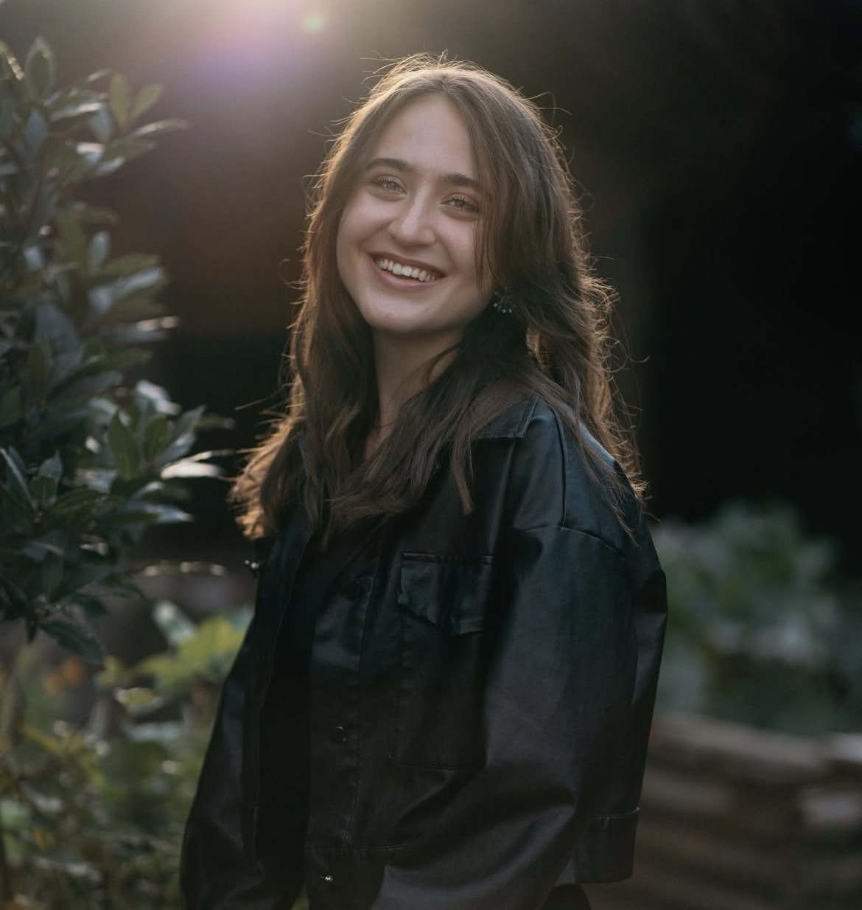

About
I’m Mihaela Mironet, an artist and digital designer based in London, educated at Roehampton University. My practice explores motion design, UX/UI, web design, illustration, and digital storytelling, combining creativity with thoughtful problem-solving to create engaging visual experiences.
Art has always been an important part of my life. Since childhood, drawing and creating have been my way of expressing ideas and exploring creativity. In my free time, I enjoy sketching and experimenting with new visual concepts.
I also completed an exchange semester at Macquarie University in Australia, where I studied Photo Media, Social Media, Web Design, and Game Development. This experience broadened my perspective and strengthened my skills in motion, 3D, web, and visual communication.
One of the most important projects in my practice is She Travels Magazine, with its first edition released in May 2026. Inspired by my love for solo travel, I created the magazine as a space for women who want to discover more about travelling, exploring the world, and feeling empowered to do so independently. The project combines editorial design, storytelling, and illustration — bringing together my passion for visual creativity and meaningful narratives. Through She Travels, I wanted to create something that feels both inspiring and personal, encouraging women to travel with confidence and curiosity.
I work across tools including After Effects, Maya, 3ds Max, Figma, HTML, CSS, JavaScript, Photoshop, and Premiere Pro, and I am constantly exploring new ways to bring ideas to life through design.